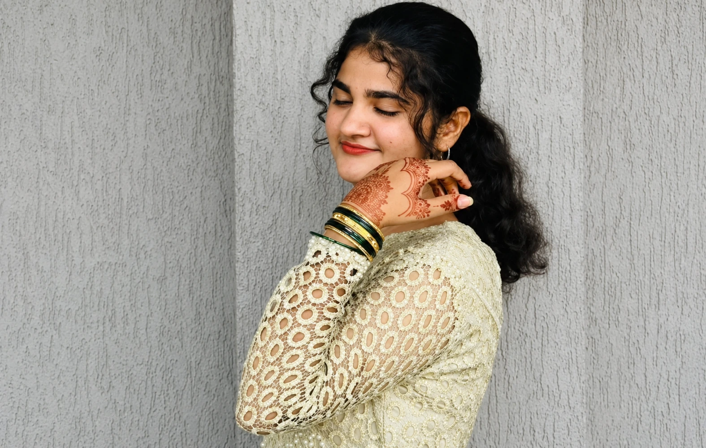

SOME FEELINGS ARE BETTER SHOWN.
And then,there’s you.
The words were mine.
This little part is all you.
THERE’S MORE TO ADOREa little collection of you.
01 / THE PART I COULDN’T FIT INTO A LETTER
MOVE A LITTLE. FEEL A LITTLE.A SOFTER SIDE. A SILLY SIDE.
A little mischief.
A lot of you.
a little attitude.
a lot of charm.THIS VERSION OF YOU, TOO.04 / 06
a lot of charm.
Every little version of you.
That’s the lovely part.
SOME DAYS JUST HAVE YOUR COLOUR.
A little sunshine.
In lilac.
05 / 06AND AFTER ALL THOSE WORDS…
My favourite
kind of you?
Just you.
The smile. The silliness.
All the little things in between.
02 / ONE LITTLE QUESTION
a deep breath, and…
SO, TEDDY…
What if this is
What if this is
our beginning?
Would you give us a chance?
No perfect answer needed. Just what feels right to you.
Your pace. Your choice. Always.
03 / A LITTLE SOMETHING TO LOOK FORWARD TO
well, now I’m smiling.
Our first
little date?
Nothing fancy. Just a little time together.
Pick something that feels like us.
A LITTLE PLAN FOR TWO
Something lovely, whenever you’re ready.
Confirming shares your yes and chosen day with Rizwan. Nothing is booked.
A DAY FOR US
Choose a day that feels right